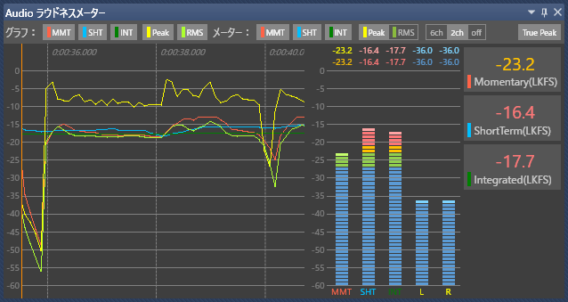

お使いのブラウザは JavaScript が使用できないため、本ドキュメントの一部機能が無効になっています。
JavaScript が無効の環境では目次を使用することができません。JavaScriptの実行が許可された状態で閲覧してください。
NintendoSDK 1.0.0 における NintendoWare オーディオ開発環境の変更点を紹介します。
Spy.exe の Audio ラウドネスメーターパネルで True Peak が表示できるようになりました。

操作方法は Spy/Spy.exe/Audio ラウドネスメーターパネル を参照してください。